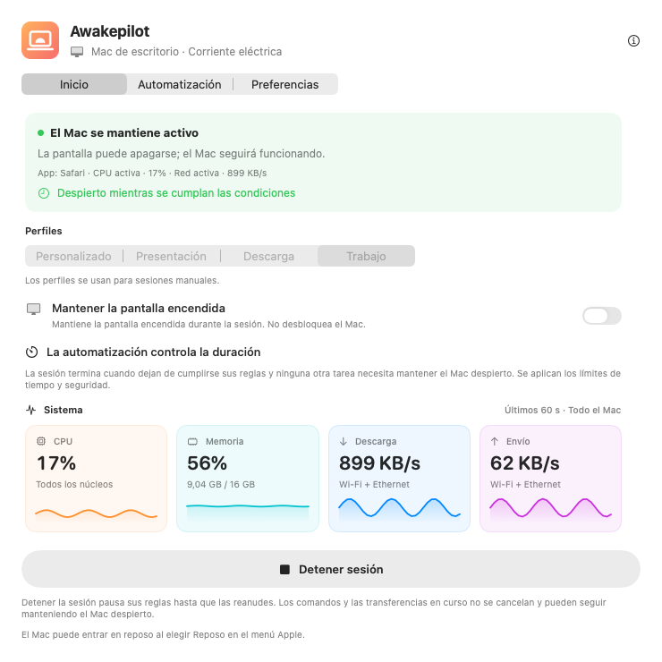
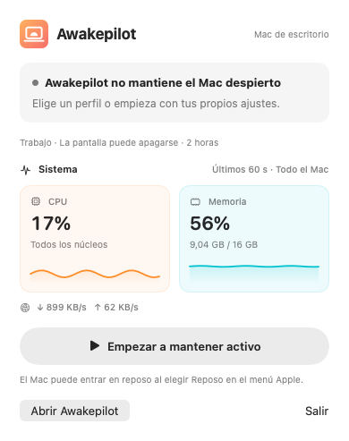
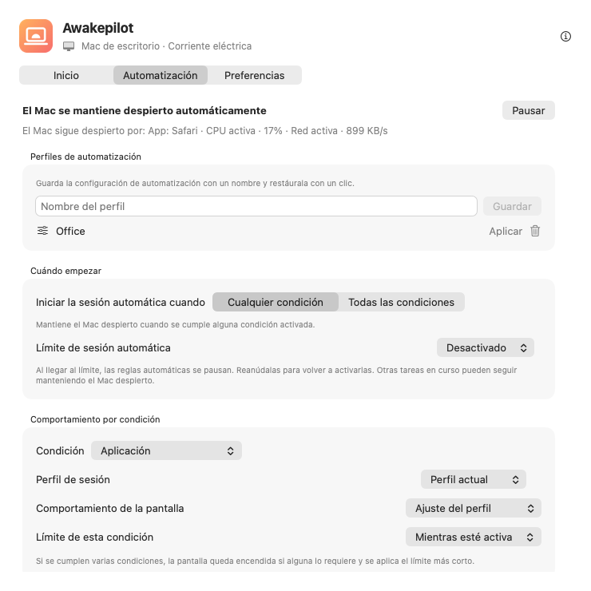

Sesiones flexibles
Mantén tu Mac despierto sin límite, durante un tiempo o hasta una fecha y hora concretas.
15m1h2h∞
Evita que el reposo automático interrumpa compilaciones, exportaciones de vídeo y transferencias de archivos grandes. Configura un temporizador o elige las condiciones que quieres supervisar. Awakepilot deja de mantener tu Mac despierto cuando termina el tiempo o dejan de cumplirse las condiciones, salvo que otra tarea activa aún lo necesite.


Elige una duración o las condiciones que deben iniciar una sesión. Al terminar la protección contra el reposo, tu Mac podrá entrar en reposo según sus ajustes; no lo hará de inmediato.
Mantén tu Mac despierto sin límite, durante un tiempo o hasta una fecha y hora concretas.
Consulta la CPU, la memoria y la actividad de descarga y subida en gráficos claros en tiempo real.
Elige qué quieres supervisar. Mantén tu Mac despierto mientras una app esté abierta, un proceso siga ejecutándose o una unidad elegida esté conectada.
Respeta el adaptador de corriente, los límites de batería, el estado del SAI y los ajustes de pantalla.
Ayuda a mantener activas las unidades externas elegidas actualizando periódicamente un pequeño archivo en cada unidad con permiso de escritura.
Consulta cuándo empezó la protección contra el reposo, por qué continuó y cuándo terminó.

Consulta las apps, los procesos y las demás condiciones que mantienen despierto tu Mac. Cuando tus reglas dejan de cumplirse y ninguna otra tarea activa necesita protección, el Mac vuelve a sus ajustes de reposo habituales.
Una app abierta no demuestra que siga trabajando. Una menor actividad de CPU o red tampoco confirma que la tarea haya terminado.
Elige qué supervisa Awakepilot, cómo se comporta la pantalla y un límite de tiempo. Consulta las condiciones activas y los cambios recientes en la app.
Inicia al conectarte a la red del estudio o a la VPN del trabajo. Mantén la pantalla encendida para las llamadas y detén la sesión al alcanzar el límite de seguridad.
Supervisa el proceso de exportación por su nombre y permite apagar la pantalla. La protección termina cuando se detiene ese proceso, salvo que otra regla o tarea aún la necesite.
Activa la sesión cuando se monte un disco de archivo, protege la copia y usa Drive Alive solo en el volumen elegido con permiso de escritura.
Inicia cuando se cumpla una condición o exige que se cumplan todas a la vez. Por ejemplo, activa la sesión solo en la Wi-Fi de la oficina con una unidad externa conectada.
Awakepilot actualiza un pequeño archivo marcador en las unidades externas que elijas con permiso de escritura. No sobrescribe archivos de otras apps y elimina su propio marcador al desactivar Drive Alive, incluso si la unidad se vuelve a conectar.
Una utilidad para evitar el reposo debe mostrar qué ocurre. Awakepilot registra los cambios relevantes sin llenar el historial con cada muestra de CPU o red.
Supervisa la actividad de red o una unidad de copias conectada. La regla termina cuando la actividad permanece por debajo del umbral o la unidad se desconecta.
Supervisa un proceso de terminal por su nombre o mantén tu Mac despierto mientras se ejecuta un comando.
Usa un perfil con la pantalla encendida solo mientras esté activa la condición de presentación.
Mantén el Mac accesible sin dejar de respetar los límites de alimentación y duración.
Sin cuenta, anuncios, analítica ni telemetría. Awakepilot guarda sus ajustes localmente y se conecta al sitio de Awakepilot para buscar actualizaciones y descargar los paquetes oficiales.
Consulta los detalles de privacidad →Descarga la versión universal para macOS, firmada y notarizada por Apple.
Arrastra a Aplicaciones. Sin cuenta ni suscripción.